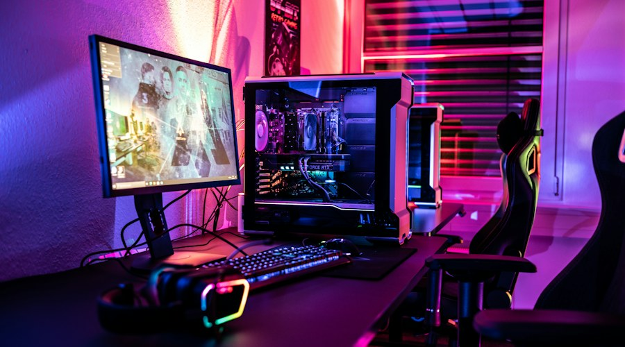
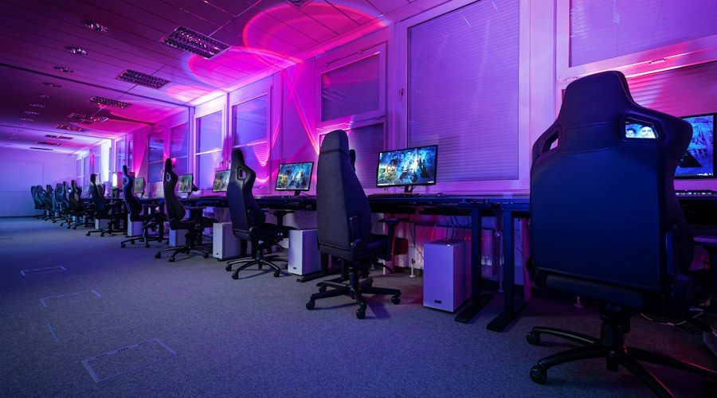
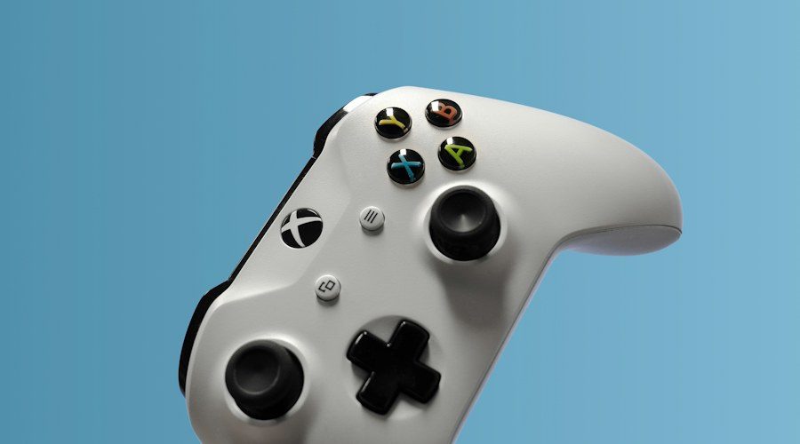

A evolução dos gráficos
Os jogos eletrônicos apresentam gráficos cada vez mais detalhados. Tecnologias de iluminação, reflexos e animações contribuem para criar ambientes mais realistas e imersivos.
Explore tecnologias e tendências dos jogos eletrônicos em três artigos editoriais de exemplo.

Os jogos eletrônicos apresentam gráficos cada vez mais detalhados. Tecnologias de iluminação, reflexos e animações contribuem para criar ambientes mais realistas e imersivos.

Os esportes eletrônicos conquistaram espaço no entretenimento mundial. Competições profissionais reúnem equipes, torcedores e jogadores de diferentes países.

Jogos em nuvem, realidade virtual e inteligência artificial estão ampliando as possibilidades de interação e criando novas experiências para os jogadores.